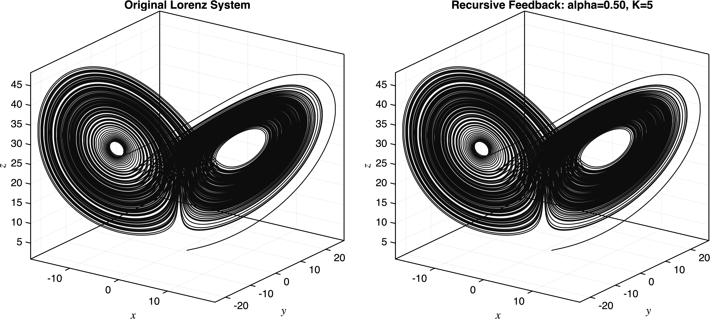
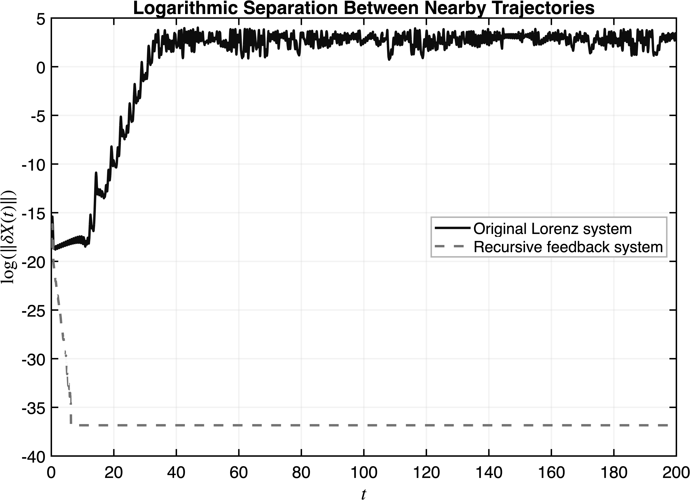
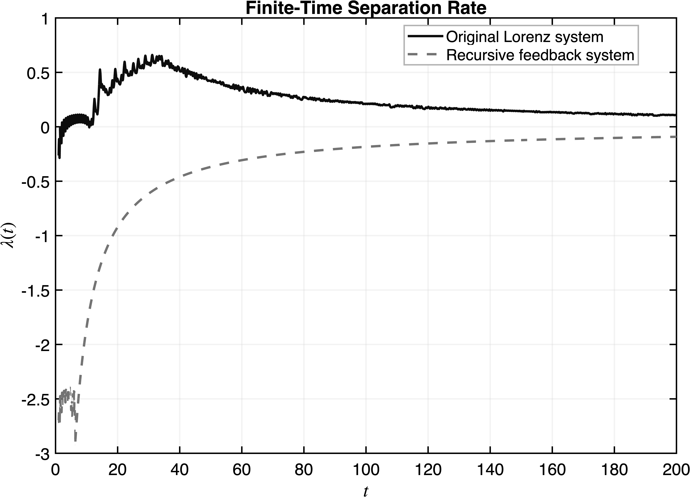

Home | Research | Notes & Thoughts | A Semester Thinking About Dynamical Systems
The previous note ended with a question: if two-dimensional systems are so heavily constrained, where does chaos come from?
At the time, I had only been briefly introduced to chaos. I did not yet know the full mathematical theory behind it, but the basic idea immediately bothered me. Chaos was not randomness. It came from deterministic nonlinear systems. The strange part was that two trajectories starting extremely close together could eventually separate in a dramatic way.
The Lorenz system is one of the classic examples used to illustrate chaotic behavior:
\[ \dot x = \sigma(y-x), \qquad \dot y = x(\rho-z)-y, \qquad \dot z = xy-\beta z. \]
Unlike the planar systems discussed earlier, this is a three-dimensional autonomous system. That extra dimension matters. The restrictions that strongly limit two-dimensional systems no longer apply in the same way, allowing much more complicated behavior to emerge.
One of the first ideas I encountered in chaos was sensitive dependence on initial conditions. Two solutions can begin extremely close together, but over time the distance between them can grow significantly.
If \(X_1(t)\) and \(X_2(t)\) are two nearby trajectories, then the perturbation between them can be written as
\[ \delta X(t)=X_2(t)-X_1(t). \]
At first, I thought chaos was mainly about small differences getting amplified over time. But the more I thought about it, the less satisfying that explanation felt.
The question that interested me was not only whether \(\delta X(t)\) grows, but how it grows. In other words, the perturbation itself begins to feel like a dynamical object worth studying.
This made me wonder whether the growth of small differences between nearby trajectories could itself be studied dynamically. Instead of only saying that nearby initial conditions diverge, I wanted to understand how that divergence evolves. I felt like the amplification is visible, but it may not be the whole story. Like small difference amplifying over time is just one visible outcome of something deep happening inside the system. I know this sounds too philoshopical but too interesting not to study. And that deeper mechanism seems to involve the geometry of the flow which I verified later, numerically in MATLAB. Stretching, folding, recurrence,and the way trajectories remain trapped in a bounded region while still separating from one another. This also helped me appreciate the Poincare' Bendixson's ruling out the possibility of chaos in planar system Thus, the minimum dimension required for chaos is 3 because in lower dimension stretching, folding and recurrence is simply restricted by topology. Yeah thats too bad, I have little to zero experience in Topology. But I feel like it would be an interesting to study in this setting.
This is why the Lorenz attractor interested me. The butterfly shape is visually famous, but the picture itself is not the main point. I think people like to exaggerate things too much, still it is very beautiful. What matters is that the system combines deterministic equations with a geometry that allows trajectories to separate, fold back, and remain confined to a complicated attracting set.
Once I started thinking about the perturbation itself as a dynamical object, the next step was pretty obvious, which was to try it:))
Rather than studying a single Lorenz trajectory, I considered two nearby trajectories and tracked the evolution of the difference between them. The goal was not to develop a rigorous theory of chaos, but simply to test whether the amplification process itself could reveal something about the underlying mechanism. This led to a series of numerical experiments in MATLAB. Starting with the Lorenz equations, I introduced a small perturbation in the initial condition and then analyzed how the separation evolved in time. In particular, I wanted to see what would remain in the system if the focus shifted away from the original trajectories and toward the perturbation itself.
The idea I eventually settled on was surprisingly simple. Earlier, I introduced the perturbation
\[ \delta X(t)=X_2(t)-X_1(t), \]
which measures the separation between two nearby trajectories.
At first, I only wanted to track this quantity and observe how it evolved. The usual story in chaos theory is that nearby trajectories separate over time, so my original goal was simply to monitor that growth numerically. However, after thinking about it for a while, a different question started bothering me.
What if the perturbation itself were allowed to influence the dynamics?
Instead of merely measuring the separation between two nearby trajectories, what if that information were fed back into the system and used to modify the evolution equations? If sensitive dependence on initial conditions is truly one of the central signatures of chaos, then reducing the growth of perturbations should significantly change the observed behavior.
My first attempt was fairly straightforward. I introduced correction terms proportional to the differences between two nearby trajectories and added them directly into the Lorenz equations. In MATLAB, this produced some reduction in the separation, but the effect was weaker than I expected. The perturbation was being suppressed, but not enough to clearly reveal what was happening.
That was when the idea of recursive feedback appeared.
Instead of using the perturbation only once, I repeatedly fed the perturbation information back into the correction itself. Each correction step slightly reduced the current perturbation and then reused the remaining information to generate another correction. The process was repeated several times during each time step, creating a simple recursive feedback mechanism.
To implement this idea, I first defined
\[ \delta_x=x_2-x_1, \qquad \delta_y=y_2-y_1, \qquad \delta_z=z_2-z_1. \]
The corrected system then took the form
\[ \dot x = \sigma(y-x)-k\delta_x, \]
\[ \dot y = x(\rho-z)-y-k\delta_y, \]
\[ \dot z = xy-\beta z-k\delta_z, \]
where \(k>0\) controls the strength of the feedback. In the actual MATLAB implementation, these correction terms were accumulated recursively over several iterations, producing a stronger suppression effect than a single correction step alone.
The goal was never to construct a physically meaningful model or develop a rigorous chaos-control strategy. This was simply a mathematical experiment driven by curiosity. If sensitive dependence on initial conditions is the primary mechanism behind chaotic behavior, then reducing perturbation growth should dramatically alter the dynamics. On the other hand, if the large-scale structure survives, then perturbation growth may be only one visible manifestation of a deeper geometric phenomenon.
With this modified system in hand, I then compared the original Lorenz dynamics against the recursively corrected dynamics through a series of numerical experiments.
To investigate this question, I implemented both the original Lorenz system and the modified system in MATLAB. I compared the resulting trajectories, monitored the separation between nearby solutions, and tracked the evolution of the perturbation over time.
What surprised me was that reducing the growth of the perturbation did not immediately destroy the large-scale geometric structure. The familiar butterfly-shaped organization remained visible even when the separation between trajectories behaved very differently.
This was the first indication that the amplification of perturbations, might not be the deepest mechanism responsible for chaotic behavior.

Side-by-side comparison of the original Lorenz system and the recursive feedback system.
This comparison was important to me because the goal was not simply to destroy the dynamics. If the feedback completely collapsed the system into a trivial path, then the experiment would not say much about chaos. Instead, the attractor-like geometry remained recognizable, while the perturbation behavior changed dramatically.

Logarithmic separation between nearby trajectories
The logarithmic separation plot shows the most dramatic difference between the two systems. In the original Lorenz system, nearby trajectories separate rapidly, which is the usual signature of sensitive dependence on initial conditions. In the recursive feedback system, however, the separation is strongly reduced. Numerically, the distance becomes so small that it is close to the limits of floating-point precision.
Finite-time separation rate for the original and recursive feedback systems.

The finite-time separation rate gives another view of the same phenomenon. For the original system, the separation rate remains positive for much of the simulation, reflecting the growth of small perturbations. For the feedback system, the rate becomes negative at first and then approaches zero from below. This means the perturbation is not continuing to grow but is being strongly suppressed.